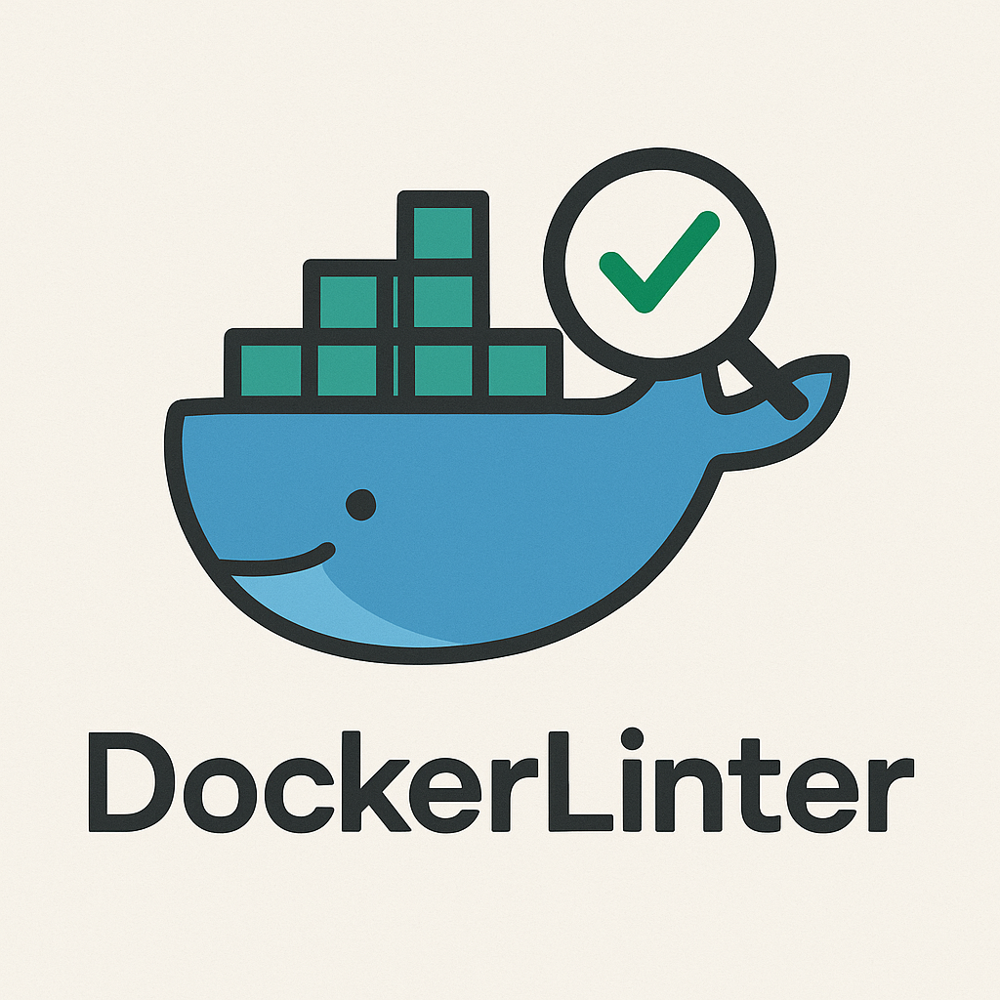

Docker-lint is a minimal linter for Dockerfiles. It parses a Dockerfile using the BuildKit parser, normalizes stages into an intermediate representation, and evaluates a set of rules to report potential issues.
See supported platforms for all GOOS/GOARCH combinations.
bash
go install github.com/asymmetric-effort/docker-lint/cmd/docker-lint@latest
Provide one or more paths or glob patterns (supports * and **). Matching files are linted and findings are emitted as a JSON array to standard output.
bash
docker-lint /path/to/Dockerfile
docker-lint './**/Dockerfile'
To display the current version:
bash
docker-lint --version
docker-lint -version
docker-lint version
Example output:
json
[
{
"rule": "DL3007",
"message": "Avoid implicit latest tag",
"line": 1
}
]
docker-lint reads an optional .docker-lint.yaml from the current working directory. The file uses the same format as
hadolint and allows global rule ignores and other settings.
yaml
ignored:
- DL3007
failure-threshold: warning
The above disables rule DL3007 and sets the failure threshold to warning.
docker-lint is also published as a container image. This allows you to lint Dockerfiles without installing the binary on your host system. Mount your project directory and provide the Dockerfile path inside the container:
bash
docker run --rm -v "$(pwd):/src" ghcr.io/asymmetric-effort/docker-lint:latest /src/Dockerfile
Common tasks can be run using make:
bash
make clean # Remove build artifacts
make lint # Run static analysis
make test # Run unit and integration tests
make build # Build the docker-lint binary
This project is licensed under the MIT License. See LICENSE for details.
(c) 2025 Asymmetric Effort, LLC. scaldwell@asymmetric-effort.com